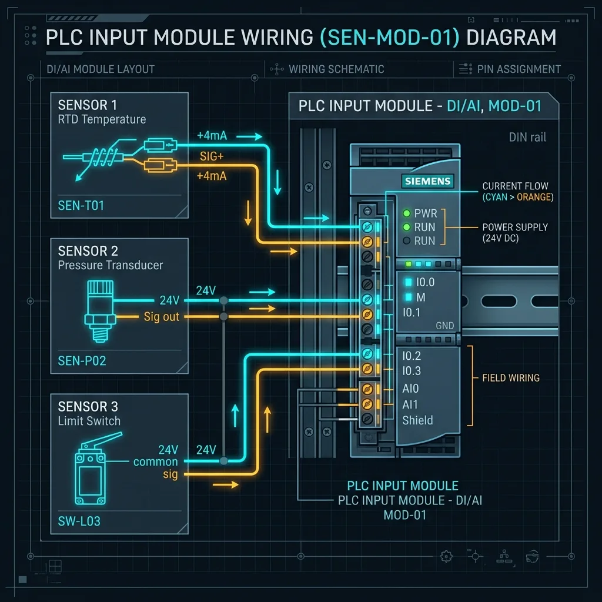

¿Qué es un Sensor Industrial? Tipos, Funcionamiento y Guía de Conexión a PLC

En el mundo de la automatización industrial en Saltillo, Ramos Arizpe y Coahuila, los motores y los cilindros neumático son los "músculos" de la fábrica, el PLC es el "cerebro", pero... ¿quiénes son los ojos, el tacto y los oídos de la planta? La respuesta es: los sensores industriales.
En esta guía técnica redactada en lenguaje claro y didáctico explicaremos qué es un sensor, cuáles son los principales tipos utilizados en las líneas de producción y cómo envían su información a un controlador PLC.
💡 Ejemplo sencillo para entender qué es un sensor:
Piensa en el sensor de una puerta automática de supermercado. Cuando caminas hacia la puerta, un sensor óptico o de movimiento capta tu presencia (detecta un cambio en el entorno) y le envía una señal eléctrica al motor para que abra la puerta. Sin ese sensor, la puerta no sabría en qué momento exacto debes pasar.
Definición: ¿Qué es un Sensor Industrial?
Un sensor industrial es un dispositivo electrónico que detecta magnitudes físicas o químicas (como presencia, distancia, temperatura, presión, nivel de líquido o luz) y las transforma en una señal eléctrica (digital o analógica) que puede ser leída e interpretada por un autómata programable (PLC) o pantalla HMI.
Sensores Discretos (Digitales) vs. Sensores Analógicos
Existen dos formas fundamentales en las que un sensor entrega información:
1. Sensores Discretos (ON / OFF)
Solo tienen 2 estados posibles: 1 (Encendido / Pieza detectada) o 0 (Apagado / Sin pieza). Son ideales para saber si una puerta está cerrada o si una caja llegó al final de la banda.
2. Sensores Analógicos (Variables Continuas)
Entregan una señal proporcional continua (ejemplo: 4 a 20 mA o 0 a 10 V). Sirven para medir valores exactos, como una temperatura de 85.4°C o un tanque de aceite al 73% de su capacidad.
Principales Tipos de Sensores Industriales y Sus Aplicaciones
1. Sensores Inductivos (Detección de Metales)
Funcionan generando un campo electromagnético de alta frecuencia en la punta de su bobina. Cuando un objeto metálico (acero, aluminio, cobre) ingresa a ese campo, el sensor altera sus oscilaciones y conmuta su salida.
Ejemplo de uso: Detectar la llegada de una estampa metálica de chasis automotriz en una prensa en Ramos Arizpe.
2. Sensores Capacitivos (Detección de Todo Tipo de Materiales)
Generan un campo electrostático. Pueden detectar materiales metálicos y no metálicos como plástico, vidrio, madera, líquidos, granos o cajas de cartón.
Ejemplo de uso: Medir el nivel de líquido dentro de una botella de plástico sin tocar el producto.
3. Sensores Ópticos / Fotocélulas
Emiten un haz de luz (infrarroja o láser) y evalúan la luz recibida. Se dividen en:
- Barrera (Emitter / Receiver): Emisor y receptor están separados en dos cuerpos. Si un objeto interrumpe el haz de luz, se activa la señal.
- Réflex: El emisor proyecta la luz hacia un espejo reflector que la devuelve al receptor.
- Difuso: La luz rebota directamente sobre la superficie del objeto a detectar.
4. Sensores Ultrasónicos (Medición por Ondas de Sonido)
Emiten un ráfaga de ondas de ultrasonido inaudibles para el oído humano y miden el tiempo que tarda el eco en regresar. Son excelentes para medir distancias o niveles sin importar el color o la transparencia del material.
¿Cómo se conecta un sensor a un PLC? (Código de Colores M12)
La inmensa mayoría de los sensores discretos de 3 hilos utilizan el código estándar internacional de colores en su cable industrial:
- Cable Café (Brown): Alimentación Positiva (+24VDC).
- Cable Azul (Blue): Alimentación Negativa (0V / GND).
- Cable Negro (Black): Salida de Señal enviada a la tarjeta de entradas del PLC.
Los sensores pueden ser tipo PNP (Sourcing - Conmutan +24V) muy utilizados en Europa/Siemens, o tipo NPN (Sinking - Conmutan 0V) populares en sistemas asiáticos.
⚡ ¿Necesitas Diagnóstico de Sensores o Capacitación en Saltillo?
En Robologix Automation conectamos, configuramos y diagnosticamos instrumentación industrial en plantas de Coahuila. Además impartimos Cursos Prácticos de PLC y Sensores en Saltillo con constancia oficial STPS DC-3.
¿Tienes dudas sobre la elección de un sensor para tu proyecto?
Habla directamente con nuestro equipo técnico en Saltillo y Ramos Arizpe.
WhatsApp Directo (+52 844 455 1869)